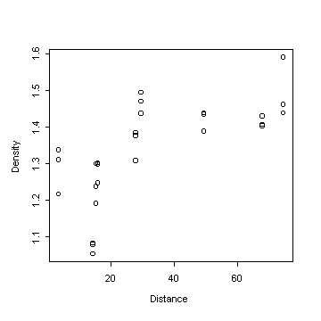

| / Home |
Keywords: polynomial regression, pure error
Risk and Sammarco (1991) found that the density of the Great Barrier Reef coral Porites lobata increases with distance from the Australian shore, due to differences between inshore and offshore environments. They made three measurements at each of nine reefs at various distances from the shore.
| Variable | Description | ||
| Reef | Name of reef | ||
| Distance | Distance to shore (km) | ||
| Density | Coral head density (g/cm3) | ||
Data file (tab-delimited text)
| Risk, M. J., and Sammarco, P. W. (1981). Cross-shelf trends in skeletal density of the massive coral Porites lobata from the Great Barrier Reef. Marine Ecology Progress Series 69, 195-200. |
| Hamilton, L. C. (1992). Regression with Graphics. Duxbury Press, Belmont, California. Chapter 2, Exercise 7. |
Risk and Sammarco (1991) used a second-order polynomial to model density in terms of distance. The repeat observations on each reef allow a calculation of pure error and a test of goodness of fit.

|
Home - About Us -
Contact Us Copyright © Gordon Smyth |